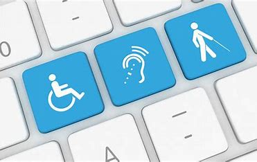

make your web site more accessable
Accessabity
is the design of products, devices, services, vehicles, or environments so as to be usable by people with disabilities.
[1] The concept of accessible design and practice of accessible development ensures both "direct access" (i.e. unassisted) and "indirect access" meaning compatibility with a person's assistive technology[2] (for example, computer screen readers).
Accessibility can be viewed as the "ability to access" and benefit from some system or entity. The concept focuses on enabling access for people with disabilities, or enabling access through the use of assistive technology; however, research and development in accessibility brings benefits to everyone.[3][4][5][6][7] Therefore, an accessible society should eliminate digital divide or knowledge divide.
Accessibility is not to be confused with usability, which is the extent to which a product (such as a device, service, or environment) can be used by specified users to achieve specified goals with effectiveness, efficiency, and satisfaction in a specified context of use.[8]
Learn How ?

To make your website more accessible, you should12:
- Include people with disabilities in the design process
- Use alt tags for images and other non-text elements
- Choose a font that is easy to read and has good contrast
- Choose a color palette that is accessible for people with color blindness or low vision
- Make navigation seamless and intuitive, with clear labels and keyboard shortcuts
- Create subtitles and transcripts for audio and video content
- Make links descriptive and avoid using "click here" or "read more"
Apply!
.jpg) No website is perfectly accessible for 100% of users. However, businesses must take reasonable efforts to comply with the requirements of the ADA. That means eliminating barriers that are likely to affect real-life users, including digital accessibility barriers.
With the number of web accessibility lawsuits rising, every business should have a plan for compliance. WCAG is frequently cited in ADA lawsuits for a reason: As the international guidelines for accessibility, WCAG is an objective and reasonable standard.
No website is perfectly accessible for 100% of users. However, businesses must take reasonable efforts to comply with the requirements of the ADA. That means eliminating barriers that are likely to affect real-life users, including digital accessibility barriers.
With the number of web accessibility lawsuits rising, every business should have a plan for compliance. WCAG is frequently cited in ADA lawsuits for a reason: As the international guidelines for accessibility, WCAG is an objective and reasonable standard.